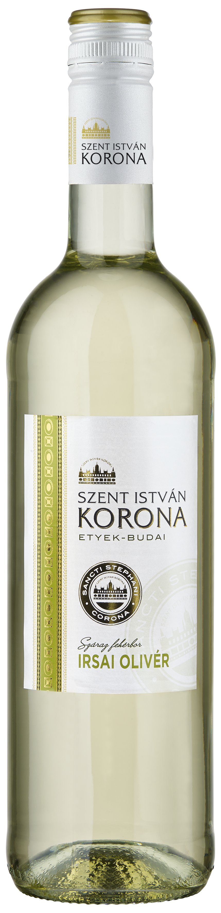
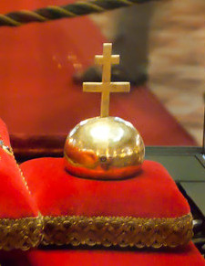
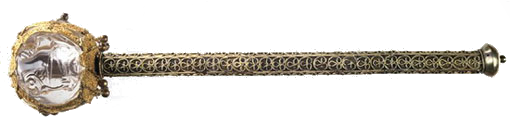

A magyar ember számára a kenyér nem ugyanaz, mint Európa, vagy a világ más tájain élők kenyere. Számunkra ez a tésztaféle a magas, erjesztett, félgömb alakú változatot jelenti. Aki ismeri a régi korok kenyerét, sosem feledi, hogy az igazán jó kenyérből egy szelet is bőven elég a jóllakáshoz. Kovásszal készítik, kemencében sütik, nem penészedik és néhány naposan is ugyanolyan ízletes, mint a sütése napján. Serclijének, gyürkéjének, vagy nevezhetjük akár csücskének is, melegen nincsen párja.


Az országalma ábrázolása Magyarországon először a koronázási paláston tűnt fel. Az 1031-ben készült paláston gömbölyű tárgyat tart a kezében Szent István és a vértanúk is. Péter, Salamon és Könyves Kálmán királyi pecsétjén szerepel az országalma, de nem ismert, hogy az ábrázolt tárgy fizikai valóságában létezett-e. Ha létezett, akkor valószínűleg nem a mai kettős kereszt díszítette, mert a kettős kereszt ábrázolása először csak III. Béla korában jelent meg. Kettős keresztes országalma-ábrázolás először Imre aranypecsétjén látható.
A második kötet Géza fejedelem uralkodásának, István királlyá választásának, megkeresztelkedésének körülményeit, az államszervezés koncepcióját, az egyházszervezet és a vármegyerendszer kiépítését mutatja be, majd összefoglalja első nagy királyunk művét: a keresztény Magyarország megteremtését.
A magyar koronázási kard a magyar koronázási jelvényegyüttes legfiatalabb tagja, készítése a 15. század második felére datálható. A magyar királyok koronázásakor nagy szerepet játszott: ezzel a fegyverrel hajtották végre az újonnan megkoronázott királyok a három ceremoniális kardvágást a koronázótemplomban az ország birtokba vétele jeléül, valamint a négy világtáj felé irányuló kardcsapásokat a koronázási dombról, ami az ország megvédésének fogadalmát jelentette.

A magyar királyi jogar a magyar koronázási jelvényegyüttes valószínűleg legrégebbi része, lehetett már Szent Istváné is. A jogar az ítélkezés, az igazságosság, a jogszolgáltatás jelképe, ősi hatalmi jelvény. A magyar királyi jogar feje metszett egyiptomi hegyikristály, a véset három oroszlánt ábrázol. A jogarfej tetején látható „mágikus csomó” egy kb. 20 mm átmérőjű aranylemezen van, amelynek szélső kerülete a középső kördísz alatt található. Ezt a tárcsát a hullámos szalaggal együtt utólagosan forrasztották hozzá a tartólemezhez, mert az országalma tetején a jelenlegi mágikus csomó alatti lemezen egy 8-10 mm átmérőjű lyuk volt, amelyet el akartak tüntetni.
A magyar koronázási palást a koronázási jelvények egyike. A koronázási ornátus (díszöltözet) egyetlen fennmaradt darabja, félkör alakú, kékeslilás színű, aranyfonállal sűrűn kivarrt textil. Gizella királyné a miseruhát elkészülte után a székesfehérvári Nagyboldogasszony-bazilikának ajándékozta, ahol később a hagyományos koronázópalásttá vált. Jelenleg a Magyar Nemzeti Múzeumban őrzik.
A magyar Szent Korona Európa egyik legrégebben használt és mai napig épségben megmaradt beavató koronája. A magyar államiság egyik jelképe, mely végigkísérte a magyar történelmet legalább a 12. századtól napjainkig. A gyakori trónviszályok idején birtoklása nagy előnyt biztosított a királyi hatalomért folytatott harcban. A Szent Korona állami jelképi funkciójára épült a Szent Korona-tan, a magyar államjog fejlődésének egyik kiindulópontja. Ez a magyar alkotmányosság alapja volt az Anjou-kor végétől egészen a második világháború végéig. A tan szerint az ország alaptörvényének és jogrendszerének végső forrása a Szent Korona, és mint jogi személy, a Magyar Államnak felel meg. A történelmi hagyomány szerint I. István király a halála előtti napon, 1038. augusztus 14-én a Szent Korona képében fölajánlotta Magyarországot Szűz Máriának. Ezzel elkezdődött az a történelmi folyamat, amelynek során a Magyar Királyság koronázási ékszeréből a magyar államiság jelképe lett.